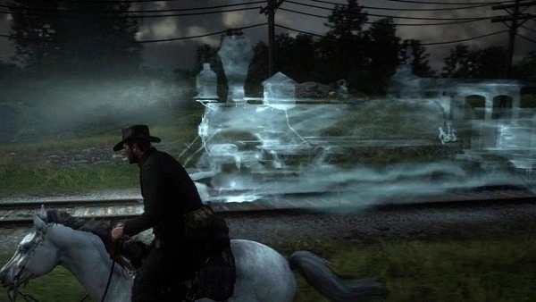

Este easter egg consiste em um trem fantasma que os fãs pensam ser uma referência a um chefão de Final Fantasy 6. Para o encontrar, siga para noroeste de Lemoyne, junto a um sinal com o nome da zona. Monte aí seu cavalo e percorra a linha do trem às 3 da madrugada até seu animal começar a se comportar de forma estranha. Então, você verá o trem fantasma aparecer.
